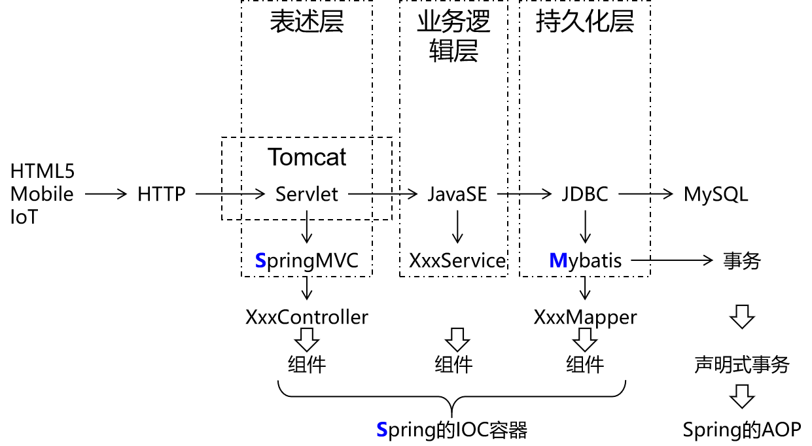

一、总体技术体系展望1、单一架构2、分布式架构二、框架的概念三、Mybatis简介1、简要历史2、Mybatis和其他持久化层技术对比①开发效率②运行效率四、Mybatis的HelloWorld1、准备数据库和数据库表2、创建工程3、创建Java实体类4、搭建Mybatis框架的开发环境①导入jar包②准备配置文件[1]Mybatis全局配置文件[2]Mybatis映射文件5、junit测试代码6、图解HelloWorld思路7、加入log4j日志打印①需求②操作[1]加入log4j的jar包[2]加入log4j的配置文件③日志的级别④STDOUT8、关联外部属性文件①需求②做法9、用上Mapper接口①思路②调整junit代码③完成Mapper接口④最终的junit测试方法10、增删改操作①insert②delete③update五、给SQL语句传参1、#{}方式2、${}方式①SQL语句②Mapper接口③junit测试④实际打印的SQL⑤应用场景举例六、数据输入0、Mybatis总体机制概括1、概念说明2、单个简单类型参数①Mapper接口中抽象方法的声明②SQL语句3、实体类类型参数①Mapper接口中抽象方法的声明②SQL语句③对应关系④结论4、零散的简单类型数据①Mapper接口中抽象方法的声明②SQL语句③对应关系5、Map类型参数①Mapper接口中抽象方法的声明②SQL语句③junit测试④对应关系⑤使用场景七、数据输出1、返回单个简单类型数据①Mapper接口中的抽象方法②SQL语句③junit测试2、返回实体类对象①Mapper接口的抽象方法②SQL语句3、返回Map类型①Mapper接口的抽象方法②SQL语句③junit测试4、返回List类型①Mapper接口中抽象方法②SQL语句③junit测试5、返回自增主键①使用场景②在Mapper配置文件中设置方式[1]Mapper接口中的抽象方法[2]SQL语句[3]junit测试④注意⑤不支持自增主键的数据库6、数据库表字段和实体类属性对应关系①别名②全局配置自动识别驼峰式命名规则③使用resultMap
一、总体技术体系展望
1、单一架构
一个项目，一个工程，导出为一个war包，在一个Tomcat上运行。也叫all in one。

2、分布式架构
一个项目，拆分成很多个模块，每个模块是一个工程。每一个工程都是运行在自己的Tomcat上。模块之间可以互相调用。每一个模块内部可以看成是一个单一架构的应用。

二、框架的概念

三、Mybatis简介
1、简要历史
原来的名字叫ibatis，从Apache迁移到Google的时候， 改名为Mybatis。
2、Mybatis和其他持久化层技术对比
①开发效率
Hibernate>Mybatis>JDBC
②运行效率
JDBC>Mybatis>Hibernate
四、Mybatis的HelloWorld
1、准备数据库和数据库表
xCREATE DATABASE `mybatis1026`;USE `mybatis1026`;CREATE TABLE `t_emp`(emp_id INT AUTO_INCREMENT,emp_name CHAR(100),emp_salary DOUBLE(10,5),PRIMARY KEY(emp_id));INSERT INTO `t_emp`(emp_name,emp_salary) VALUES("tom",200.33);2、创建工程
3、创建Java实体类
实体类是和现实世界中某一个具体或抽象的概念对应，是软件开发过程中，为了管理现实世界中的数据而设计的模型。
实体类的多个不同的叫法：
domain：领域模型
entity：实体
POJO：Plain Old Java Object
Java bean：一个Java类
xxxxxxxxxx/** * 和数据库表t_emp对应的实体类 * emp_id INT AUTO_INCREMENT * emp_name CHAR(100) * emp_salary DOUBLE(10,5) * * Java的实体类中，属性的类型不要使用基本数据类型，要使用包装类型。因为包装类型可以赋值为null，表示空，而基本数据类型不可以。 */public class Employee { private Integer empId; private String empName; private Double empSalary; public Employee() { } public Integer getEmpId() { return empId; } public void setEmpId(Integer empId) { this.empId = empId; } public String getEmpName() { return empName; } public void setEmpName(String empName) { this.empName = empName; } public Double getEmpSalary() { return empSalary; } public void setEmpSalary(Double empSalary) { this.empSalary = empSalary; } public String toString() { return "Employee{" + "empId=" + empId + ", empName='" + empName + '\'' + ", empSalary=" + empSalary + '}'; } public Employee(Integer empId, String empName, Double empSalary) { this.empId = empId; this.empName = empName; this.empSalary = empSalary; }}4、搭建Mybatis框架的开发环境
①导入jar包
- mybatis-3.4.1.jar：Mybatis核心包
- mysql-connector-java-5.1.37-bin.jar：MySQL驱动
- junit-4.12.jar：junit框架
- hamcrest-core-1.3.jar：junit框架
添加到当前工程模块的运行时环境
②准备配置文件
[1]Mybatis全局配置文件
习惯上命名为mybatis-config.xml，这个文件名仅仅只是建议，并不是强制要求。将来整合Spring之后，这个配置文件可以省略，所以大家操作时可以直接复制、粘贴。
xxxxxxxxxx <configuration> <!-- environments表示配置Mybatis的开发环境，可以配置多个环境，在众多具体环境中，使用default属性指定实际运行时使用的环境 --> <environments default="development"> <!-- environment表示配置Mybatis的一个具体的环境 --> <environment id="development"> <!-- Mybatis的内置的事务管理器 --> <transactionManager type="JDBC"/> <!-- 配置数据源 --> <dataSource type="POOLED"> <!-- 建立数据库连接的具体信息 --> <property name="driver" value="com.mysql.jdbc.Driver"/> <property name="url" value="jdbc:mysql://192.168.198.100:3306/mybatis0922"/> <property name="username" value="root"/> <property name="password" value="atguigu"/> </dataSource> </environment> </environments> <mappers> <!-- 指定Mybatis映射文件的具体位置 --> <mapper resource="com/atguigu/mybatis/dao/EmployeeMapper.xml"/> </mappers></configuration>
注意：配置文件存放的位置是src目录下。
[2]Mybatis映射文件
相关概念：ORM（Object Relationship Mapping）对象关系映射。对象指的是Java的实体类对象，关系指的是关系型数据库，映射指的是二者之间的对应关系。
| Java概念 | 数据库概念 |
|---|---|
| 类 | 表 |
| 属性 | 字段/列 |
| 对象 | 记录/行 |
xxxxxxxxxx <!-- mapper是根标签，namespace属性：在Mybatis全局范围内找到一个具体的Mapper配置 --><mapper namespace="com.atguigu.mybatis.dao.EmployeeMapper"> <!-- 编写具体的SQL语句，使用id属性唯一的标记一条SQL语句 --> <!-- resultType属性：指定封装查询结果的Java实体类的全类名 --> <select id="selectEmployee" resultType="com.atguigu.mybatis.entity.Employee"> <!-- Mybatis负责把SQL语句中的#{}部分替换成“?”占位符，在#{}内部还是要声明一个见名知意的名称 --> select emp_id empId,emp_name empName,emp_salary empSalary from t_emp where emp_id=#{empId} </select></mapper>5、junit测试代码
xxxxxxxxxxpublic void testSelectEmployee() throws IOException { // 1.创建SqlSessionFactory对象 // ①声明Mybatis全局配置文件的路径 String mybatisConfigFilePath = "mybatis-config.xml"; // ②以输入流的形式加载Mybatis配置文件 InputStream inputStream = Resources.getResourceAsStream(mybatisConfigFilePath); // ③基于读取Mybatis配置文件的输入流创建SqlSessionFactory对象 SqlSessionFactory sessionFactory = new SqlSessionFactoryBuilder().build(inputStream); // 2.使用SqlSessionFactory对象开启一个会话 SqlSession session = sessionFactory.openSession(); // 3.根据Mapper配置文件的名称空间+SQL语句的id找到具体的SQL语句 // 格式是：名称空间.SQL语句的id String statement = "com.atguigu.mybatis.dao.EmployeeMapper.selectEmployee"; // 要传入SQL语句的参数 Integer empId = 2; // 执行SQL语句 Object result = session.selectOne(statement, empId); System.out.println("o = " + result); // 4.关闭SqlSession session.close();}说明：
- SqlSession：代表Java程序和数据库之间的会话。（HttpSession是Java程序和浏览器之间的会话）
- SqlSessionFactory：是“生产”SqlSession的“工厂”。
- 工厂模式：如果创建某一个对象，使用的过程基本固定，那么我们就可以把创建这个对象的相关代码封装到一个“工厂类”中，以后都使用这个工厂类来“生产”我们需要的对象。
6、图解HelloWorld思路
- 根据Mybatis全局配置文件创建SqlSessionFactory对象
- 根据Mybatis全局配置文件中mappers/mapper配置加载映射配置文件
- 通过SqlSessionFactory对象开启会话，创建SqlSession对象
- 调用SqlSession对象的方法，根据名称空间和SQL的id找到具体的一条SQL语句
- Mybatis底层把SQL语句封装到PreparedStatement对象中发送给数据库执行
7、加入log4j日志打印
①需求
在Mybatis工作过程中，通过打印日志的方式，将要执行的SQL语句打印出来。
②操作
[1]加入log4j的jar包

[2]加入log4j的配置文件
支持XML和properties属性文件两种形式。无论使用哪种形式，文件名是固定的：
- log4j.xml
- log4j.properties
xxxxxxxxxx <log4j:configuration xmlns:log4j="http://jakarta.apache.org/log4j/"> <appender name="STDOUT" class="org.apache.log4j.ConsoleAppender"> <param name="Encoding" value="UTF-8" /> <layout class="org.apache.log4j.PatternLayout"> <param name="ConversionPattern" value="%-5p %d{MM-dd HH:mm:ss,SSS} %m (%F:%L) \n" /> </layout> </appender> <logger name="java.sql"> <level value="debug" /> </logger> <logger name="org.apache.ibatis"> <level value="info" /> </logger> <root> <level value="debug" /> <appender-ref ref="STDOUT" /> </root></log4j:configuration>③日志的级别
FATAL(致命)>ERROR(错误)>WARN(警告)>INFO(信息)>DEBUG(调试)
从左到右打印的内容越来越详细
④STDOUT
是standard output的缩写，意思是标准输出。对于Java程序来说，打印到标准输出就是打印到控制台。
8、关联外部属性文件
①需求
在实际开发时，同一套代码往往会对应多个不同的具体服务器环境。使用的数据库连接参数也不同。为了更好的维护这些信息，我们建议把数据库连接信息提取到Mybatis全局配置文件外边。
②做法
创建jdbc.properties配置文件
xxxxxxxxxxwechat.dev.driver=com.mysql.jdbc.Driverwechat.dev.url=jdbc:mysql://192.168.198.100:3306/mybatis0922wechat.dev.username=rootwechat.dev.password=atguiguwechat.test.driver=com.mysql.jdbc.Driverwechat.test.url=jdbc:mysql://192.168.198.150:3306/mybatis0922wechat.test.username=rootwechat.test.password=atguiguwechat.product.driver=com.mysql.jdbc.Driverwechat.product.url=jdbc:mysql://192.168.198.200:3306/mybatis0922wechat.product.username=rootwechat.product.password=atguigu在Mybatis全局配置文件中指定外部jdbc.properties文件的位置
xxxxxxxxxx<properties resource="jdbc.properties"/>在需要具体属性值的时候使用${key}格式引用属性文件中的键
xxxxxxxxxx<dataSource type="POOLED"> <!-- 建立数据库连接的具体信息（引用了外部属性文件中的数据） --> <property name="driver" value="${wechat.dev.driver}"/> <property name="url" value="${wechat.dev.url}"/> <property name="username" value="${wechat.dev.username}"/> <property name="password" value="${wechat.dev.password}"/></dataSource>
9、用上Mapper接口
Mybatis中的Mapper接口相当于以前的Dao。但是区别在于，Mapper仅仅是接口，我们不需要提供实现类。
①思路

②调整junit代码
xxxxxxxxxxpublic class PromotedMybatisTest { private SqlSessionFactory sessionFactory; public void init() throws IOException { // 1.创建SqlSessionFactory对象 // ①声明Mybatis全局配置文件的路径 String mybatisConfigFilePath = "mybatis-config.xml"; // ②以输入流的形式加载Mybatis配置文件 InputStream inputStream = Resources.getResourceAsStream(mybatisConfigFilePath); // ③基于读取Mybatis配置文件的输入流创建SqlSessionFactory对象 sessionFactory = new SqlSessionFactoryBuilder().build(inputStream); } public void testSelectEmployee() throws IOException { SqlSession session = sessionFactory.openSession(); session.close(); }}③完成Mapper接口
xxxxxxxxxxpublic interface EmployeeMapper { Employee selectEmployee(Integer empId); }- 方法名和SQL的id一致
- 方法返回值和resultType一致
- 方法的参数和SQL的参数一致
- 接口的全类名和映射配置文件的名称空间一致
④最终的junit测试方法
xxxxxxxxxxpublic void testSelectEmployee() throws IOException { // 1.从工厂对象中获取SqlSession对象 SqlSession session = sessionFactory.openSession(); // 2.通过SqlSession对象获取Mapper接口对象 EmployeeMapper employeeMapper = session.getMapper(EmployeeMapper.class); // 3.调用Mapper接口的方法 Employee employee = employeeMapper.selectEmployee(2); // 4.打印返回值 System.out.println("employee = " + employee); // 5.关闭Session session.close();}
10、增删改操作
①insert
SQL语句
xxxxxxxxxx<insert id="insertEmployee"> insert into t_emp(emp_name,emp_salary) values(#{empName},#{empSalary})</insert>Java代码中的Mapper接口：
xxxxxxxxxxpublic interface EmployeeMapper { Employee selectEmployee(Integer empId); int insertEmployee(Employee employee);}Java代码中的junit测试：
xxxxxxxxxxpublic void testSaveEmployee() { SqlSession session = sessionFactory.openSession(); EmployeeMapper employeeMapper = session.getMapper(EmployeeMapper.class); // 创建要保存到数据库的对象 Employee employee = new Employee(); // 给实体类对象设置具体属性值 employee.setEmpName("jerry"); employee.setEmpSalary(5000.33); // 执行保存操作 int result = employeeMapper.insertEmployee(employee); // 打印受影响的行数 System.out.println("result = " + result); // 提交事务 session.commit(); session.close();}②delete
SQL语句
xxxxxxxxxx <delete id="deleteEmployee"> delete from t_emp where emp_id=#{empId} </delete>Java代码中的Mapper接口：
xxxxxxxxxxpublic interface EmployeeMapper { Employee selectEmployee(Integer empId); int insertEmployee(Employee employee); int deleteEmployee(Integer empId);}Java代码中的junit测试：
xxxxxxxxxxpublic void testRemoveEmployee() { SqlSession session = sessionFactory.openSession(); EmployeeMapper employeeMapper = session.getMapper(EmployeeMapper.class); int result = employeeMapper.deleteEmployee(1); System.out.println("result = " + result); session.commit(); session.close();}③update
SQL语句：
xxxxxxxxxx<update id="updateEmployee"> update t_emp set emp_name=#{empName},emp_salary=#{empSalary} where emp_id=#{empId}</update>Java代码中的Mapper接口：
xxxxxxxxxxpublic interface EmployeeMapper { Employee selectEmployee(Integer empId); int insertEmployee(Employee employee); int deleteEmployee(Integer empId); int updateEmployee(Employee employee);}Java代码中的junit测试：
xxxxxxxxxxpublic void testUpdateEmployee() { SqlSession session = sessionFactory.openSession(); EmployeeMapper employeeMapper = session.getMapper(EmployeeMapper.class); Employee employee = new Employee(2, "AAAAAA", 6666.66); int result = employeeMapper.updateEmployee(employee); System.out.println("result = " + result); session.commit(); session.close();}
五、给SQL语句传参
1、#{}方式
Mybatis会在运行过程中，把配置文件中的SQL语句里面的#{}转换为“?”占位符，发送给数据库执行。
配置文件中的SQL：
xxxxxxxxxx<delete id="deleteEmployeeById"> delete from t_emp where emp_id=#{empId}</delete>实际执行的SQL：
xxxxxxxxxxdelete from t_emp where emp_id=?2、${}方式
将来会根据${}拼字符串
①SQL语句
xxxxxxxxxx<select id="selectEmployeeByName" resultType="com.atguigu.mybatis.entity.Employee"> select emp_id empId,emp_name empName,emp_salary empSalary from t_emp where emp_name like '%${empName}%'</select>②Mapper接口
注意：Mapper接口中不能出现重名的方法，哪怕是重载的方法也不行！
xxxxxxxxxxpublic interface EmployeeMapper { Employee selectEmployee(Integer empId); Employee selectEmployeeByName(("empName") String empName); int insertEmployee(Employee employee); int deleteEmployee(Integer empId); int updateEmployee(Employee employee);}③junit测试
xxxxxxxxxxpublic void testDollar() { SqlSession session = sessionFactory.openSession(); EmployeeMapper employeeMapper = session.getMapper(EmployeeMapper.class); Employee employee = employeeMapper.selectEmployeeByName("r"); System.out.println("employee = " + employee); session.commit(); session.close();}④实际打印的SQL
xxxxxxxxxxselect emp_id empId,emp_name empName,emp_salary empSalary from t_emp where emp_name like '%r%'⑤应用场景举例
在SQL语句中，数据库表的表名不确定，需要外部动态传入，此时不能使用#{}，因为数据库不允许表名位置使用问号占位符，此时只能使用${}。
其他情况，只要能用#{}肯定不用${}，避免SQL注入。
六、数据输入
0、Mybatis总体机制概括

1、概念说明
这里数据输入具体是指上层方法（例如Service方法）调用Mapper接口时，数据传入的形式。
简单类型：只包含一个值的数据类型
- 基本数据类型：int、byte、short、double、……
- 基本数据类型的包装类型：Integer、Character、Double、……
- 字符串类型：String
复杂类型：包含多个值的数据类型
- 实体类类型：Employee、Department、……
- 集合类型：List、Set、Map、……
- 数组类型：int[]、String[]、……
- 复合类型：List<Employee>、实体类中包含集合……
2、单个简单类型参数
①Mapper接口中抽象方法的声明
xxxxxxxxxxEmployee selectEmployee(Integer empId);②SQL语句
xxxxxxxxxx<select id="selectEmployee" resultType="com.atguigu.mybatis.entity.Employee"> select emp_id empId,emp_name empName,emp_salary empSalary from t_emp where emp_id=#{empId}</select>3、实体类类型参数
①Mapper接口中抽象方法的声明
xxxxxxxxxxint insertEmployee(Employee employee);②SQL语句
xxxxxxxxxx<insert id="insertEmployee"> insert into t_emp(emp_name,emp_salary) values(#{empName},#{empSalary})</insert>③对应关系

④结论
Mybatis会根据#{}中传入的数据，加工成getXxx()方法，通过反射在实体类对象中调用这个方法，从而获取到对应的数据。填充到#{}这个位置。
4、零散的简单类型数据
①Mapper接口中抽象方法的声明
xxxxxxxxxxint updateEmployee(("empId") Integer empId,("empSalary") Double empSalary);②SQL语句
xxxxxxxxxx <update id="updateEmployee"> update t_emp set emp_salary=#{empSalary} where emp_id=#{empId} </update>③对应关系

5、Map类型参数
①Mapper接口中抽象方法的声明
xxxxxxxxxxint updateEmployeeByMap(Map<String, Object> paramMap);②SQL语句
xxxxxxxxxx <update id="updateEmployeeByMap"> update t_emp set emp_salary=#{empSalaryKey} where emp_id=#{empIdKey} </update>③junit测试
xxxxxxxxxxpublic void testUpdateEmpNameByMap() { SqlSession session = sessionFactory.openSession(); EmployeeMapper mapper = session.getMapper(EmployeeMapper.class); Map<String, Object> paramMap = new HashMap<>(); paramMap.put("empSalaryKey", 999.99); paramMap.put("empIdKey", 5); int result = mapper.updateEmployeeByMap(paramMap); System.out.println("result = " + result); session.commit(); session.close();}④对应关系
#{}中写Map中的key
⑤使用场景
有很多零散的参数需要传递，但是没有对应的实体类类型可以使用。使用@Param注解一个一个传入又太麻烦了。所以都封装到Map中。
七、数据输出
1、返回单个简单类型数据
①Mapper接口中的抽象方法
xxxxxxxxxxint selectEmpCount();②SQL语句
xxxxxxxxxx <select id="selectEmpCount" resultType="int"> select count(*) from t_emp </select>③junit测试
xxxxxxxxxx public void testEmpCount() { SqlSession session = sessionFactory.openSession(); EmployeeMapper employeeMapper = session.getMapper(EmployeeMapper.class); int count = employeeMapper.selectEmpCount(); System.out.println("count = " + count); session.commit(); session.close(); }
2、返回实体类对象
①Mapper接口的抽象方法
xxxxxxxxxxEmployee selectEmployee(Integer empId);②SQL语句
xxxxxxxxxx<!-- 编写具体的SQL语句，使用id属性唯一的标记一条SQL语句 --><!-- resultType属性：指定封装查询结果的Java实体类的全类名 --><select id="selectEmployee" resultType="com.atguigu.mybatis.entity.Employee"> <!-- Mybatis负责把SQL语句中的#{}部分替换成“?”占位符 --> <!-- 给每一个字段设置一个别名，让别名和Java实体类中属性名一致 --> select emp_id empId,emp_name empName,emp_salary empSalary from t_emp where emp_id=#{maomi}</select>通过给数据库表字段加别名，让查询结果的每一列都和Java实体类中属性对应起来。
3、返回Map类型
适用于SQL查询返回的各个字段综合起来并不和任何一个现有的实体类对应，没法封装到实体类对象中。能够封装成实体类类型的，就不使用Map类型。
①Mapper接口的抽象方法
xxxxxxxxxxMap<String,Object> selectEmpNameAndMaxSalary();②SQL语句
xxxxxxxxxx<!-- Map<String,Object> selectEmpNameAndMaxSalary(); --><!-- 返回工资最高的员工的姓名和他的工资 --><select id="selectEmpNameAndMaxSalary" resultType="map"> SELECT emp_name 员工姓名, emp_salary 员工工资, (SELECT AVG(emp_salary) FROM t_emp) 部门平均工资 FROM t_emp WHERE emp_salary=( SELECT MAX(emp_salary) FROM t_emp )</select>③junit测试
xxxxxxxxxx public void testQueryEmpNameAndSalary() { SqlSession session = sessionFactory.openSession(); EmployeeMapper employeeMapper = session.getMapper(EmployeeMapper.class); Map<String, Object> resultMap = employeeMapper.selectEmpNameAndMaxSalary(); Set<Map.Entry<String, Object>> entrySet = resultMap.entrySet(); for (Map.Entry<String, Object> entry : entrySet) { String key = entry.getKey(); Object value = entry.getValue(); System.out.println(key + "=" + value); } session.commit(); session.close(); }
4、返回List类型
查询结果返回多个实体类对象，希望把多个实体类对象放在List集合中返回。此时不需要任何特殊处理，在resultType属性中还是设置实体类类型即可。
①Mapper接口中抽象方法
xxxxxxxxxxList<Employee> selectAll();②SQL语句
xxxxxxxxxx <!-- List<Employee> selectAll(); --> <select id="selectAll" resultType="com.atguigu.mybatis.entity.Employee"> select emp_id empId,emp_name empName,emp_salary empSalary from t_emp </select>③junit测试
xxxxxxxxxx public void testSelectAll() { SqlSession session = sessionFactory.openSession(); EmployeeMapper employeeMapper = session.getMapper(EmployeeMapper.class); List<Employee> employeeList = employeeMapper.selectAll(); for (Employee employee : employeeList) { System.out.println("employee = " + employee); } session.commit(); session.close(); }
5、返回自增主键
①使用场景
例如：保存订单信息。需要保存Order对象和List<OrderItem>。其中，OrderItem对应的数据库表，包含一个外键，指向Order对应表的主键。
在保存List<OrderItem的时候，需要使用下面的SQL：
xxxxxxxxxxinsert into t_order_item(item_name,item_price,item_count,order_id) values(...)这里需要用到的order_id，是在保存Order对象时，数据库表以自增方式产生的，需要特殊办法拿到这个自增的主键值。至于，为什么不能通过查询最大主键的方式解决这个问题，参考下图：

②在Mapper配置文件中设置方式
[1]Mapper接口中的抽象方法
xxxxxxxxxxint insertEmployee(Employee employee);[2]SQL语句
xxxxxxxxxx<!-- int insertEmployee(Employee employee); --><!-- useGeneratedKeys属性字面意思就是“使用生成的主键” --><!-- keyProperty属性可以指定主键在实体类对象中对应的属性名，Mybatis会将拿到的主键值存入这个属性 --><insert id="insertEmployee" useGeneratedKeys="true" keyProperty="empId"> insert into t_emp(emp_name,emp_salary) values(#{empName},#{empSalary})</insert>[3]junit测试
xxxxxxxxxxpublic void testSaveEmp() { SqlSession session = sessionFactory.openSession(); EmployeeMapper employeeMapper = session.getMapper(EmployeeMapper.class); Employee employee = new Employee(); employee.setEmpName("john"); employee.setEmpSalary(666.66); employeeMapper.insertEmployee(employee); System.out.println("employee.getEmpId() = " + employee.getEmpId()); session.commit(); session.close();}④注意
Mybatis是将自增主键的值设置到实体类对象中，而不是以Mapper接口方法返回值的形式返回。
⑤不支持自增主键的数据库
而对于不支持自增型主键的数据库（例如 Oracle），则可以使用 selectKey 子元素：selectKey 元素将会首先运行，id 会被设置，然后插入语句会被调用
xxxxxxxxxx<insert id="insertEmployee" parameterType="com.atguigu.mybatis.beans.Employee" databaseId="oracle"> <selectKey order="BEFORE" keyProperty="id" resultType="integer"> select employee_seq.nextval from dual </selectKey> insert into orcl_employee(id,last_name,email,gender) values(#{id},#{lastName},#{email},#{gender})</insert>或者是
xxxxxxxxxx<insert id="insertEmployee" parameterType="com.atguigu.mybatis.beans.Employee" databaseId="oracle"> <selectKey order="AFTER" keyProperty="id" resultType="integer"> select employee_seq.currval from dual </selectKey> insert into orcl_employee(id,last_name,email,gender) values(employee_seq.nextval,#{lastName},#{email},#{gender})</insert>
6、数据库表字段和实体类属性对应关系
①别名
将字段的别名设置成和实体类属性一致。
xxxxxxxxxx<!-- 编写具体的SQL语句，使用id属性唯一的标记一条SQL语句 --><!-- resultType属性：指定封装查询结果的Java实体类的全类名 --><select id="selectEmployee" resultType="com.atguigu.mybatis.entity.Employee"> <!-- Mybatis负责把SQL语句中的#{}部分替换成“?”占位符 --> <!-- 给每一个字段设置一个别名，让别名和Java实体类中属性名一致 --> select emp_id empId,emp_name empName,emp_salary empSalary from t_emp where emp_id=#{maomi}</select>关于实体类属性的约定：
getXxx()方法、setXxx()方法把方法名中的get或set去掉，首字母小写。
②全局配置自动识别驼峰式命名规则
在Mybatis全局配置文件加入如下配置：
xxxxxxxxxx<!-- 使用settings对Mybatis全局进行设置 --><settings> <!-- 将xxx_xxx这样的列名自动映射到xxXxx这样驼峰式命名的属性名 --> <setting name="mapUnderscoreToCamelCase" value="true"/></settings>SQL语句中可以不使用别名
xxxxxxxxxx<!-- Employee selectEmployee(Integer empId); --><select id="selectEmployee" resultType="com.atguigu.mybatis.entity.Employee"> select emp_id,emp_name,emp_salary from t_emp where emp_id=#{empId}</select>
③使用resultMap
使用resultMap标签定义对应关系，再在后面的SQL语句中引用这个对应关系
xxxxxxxxxx<!-- 专门声明一个resultMap设定column到property之间的对应关系 --><resultMap id="selectEmployeeByRMResultMap" type="com.atguigu.mybatis.entity.Employee"> <!-- 使用id标签设置主键列和主键属性之间的对应关系 --> <!-- column属性用于指定字段名；property属性用于指定Java实体类属性名 --> <id column="emp_id" property="empId"/> <!-- 使用result标签设置普通字段和Java实体类属性之间的关系 --> <result column="emp_name" property="empName"/> <result column="emp_salary" property="empSalary"/></resultMap><!-- Employee selectEmployeeByRM(Integer empId); --><select id="selectEmployeeByRM" resultMap="selectEmployeeByRMResultMap"> select emp_id,emp_name,emp_salary from t_emp where emp_id=#{empId}</select>